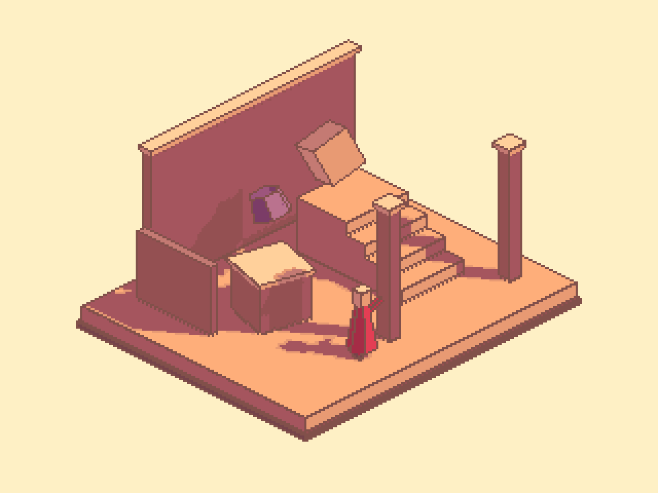

Tracefolio REPORTS & ISSUES
Tracefolio REPORTS & ISSUES아이소매트릭 선 비교 — 바깥 실루엣과 내부 모서리 표현 차이
완료참고는 짙은 바깥 경계와 밝은 내부 모서리를 구분합니다. 현재 구현은 깊이·노멀 경계를 합쳐 같은 불투명 선색으로 처리하는 차이를 확인했습니다.
작업 결과
기둥의 내부 세로 모서리에서 사용자께서 지적한 차이를 확인했습니다. 현재 구현에는 바깥 실루엣과 내부 면 경계를 별도의 강도·색으로 처리하는 구분이 없습니다. 이번에는 비교만 수행했고 제품은 수정하지 않았습니다.
변경 내용
적용 내용
비교 기준은 채팅에 첨부된 Image 3입니다.
| 구분 | 참고에서 관찰한 표현 | 현재 구현 |
|---|---|---|
| 바깥 실루엣 | 짙은 선으로 형상 구분 | 갈색 불투명 선 |
| 같은 물체의 내부 면 모서리 | 기둥 세로선처럼 밝고 낮은 대비의 선/하이라이트 | 같은 갈색 선 |
| 물체 사이 겹침 경계 | 내부 화면에 있어도 형상을 구분하는 짙은 경계가 보임 | 깊이/노멀 결과와 합쳐 처리 |
단순히 화면 안쪽의 모든 선을 밝히는 것으로 해석하면 겹침 경계까지 약해질 수 있습니다. 물체의 외곽/가림과 같은 물체의 면 모서리를 구분해서 비교해야 합니다.

현재 결과의 기존 실제 Unity 렌더입니다. 이번 비교를 위해 재생성하거나 수정한 이미지가 아닙니다.
검증
- 참고 Image 3의 y=340에서 바깥 경계 부근 (544,340)은 RGB 약 (93,40,43), 내부 밝은 모서리 (560,340)는 (199,102,115), 옆 면 (576,340)는 (165,85,94)입니다. 압축 이미지의 단일 픽셀 표본이며 참고 제품의 공식 팔레트나 모든 내부 경계의 규칙을 뜻하지 않습니다.
- PixelCameraProcess.cginc에서 깊이 불연속과 노멀 불연속을 max로 합쳐 단일 edge에 누적한 뒤 PCOutlineLighting(_OutlineColor, edgeDirection)으로 색을 적용합니다.
- 현재 프리셋은 outlineStyle=Flat, outlineColor=#81504A, alpha=1입니다. PCOutlineLighting은 Flat에서 원래 선색을 그대로 반환하므로 검출 종류별로 색/강도를 달리하지 않습니다.
- 선택 가능한 DirectionalBevel도 화면상 선 방향에 따른 색 변화이며, 외부/내부 경계를 별도로 분류하는 기능은 아닙니다.
- 제품·소스·설정·화면 포커스는 변경하지 않았습니다. 표본 및 확인 범위
- 교훈 검토: 기존의 참고 대조·실제 픽셀 검증 규칙을 적용했습니다. 새 전역 지침은 추가하지 않았습니다.
남은 사항
참고의 밝은 선이 화면 후처리인지, 실제 베벨 형상·재질·조명 결과인지는 원본 구현이 없어 미확인입니다. 모든 내부 경계를 밝게 처리해야 한다고 단정하지 않습니다. 이번 비교 결과를 새 기능 구현 완료로 보고하지 않습니다.
작업 시간
- 제안 시간: 2~4분
- 실제로 완료된 시간: 비교 시작 2026-11-05 20:30:05 KST. 이미지·소스 대조 후 기록하며 공개 확인 시각은 별도로 기록합니다.
- XERJ: 미사용 — PixelCamera 범위 밖으로 기존 확인된 소스·설정과 실제 이미지 픽셀을 직접 대조했습니다.